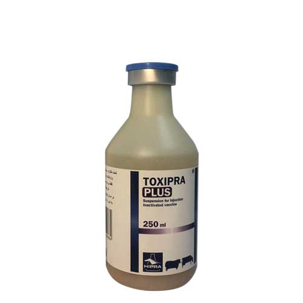

واکسن کشته چندگانه علیه بیماری انتروتوکسمی، کزاز و شاربن علامتی، هیپرا
📝ترکیب:
هر دوز واکسن توکسی پرا پلاس (2 میلی لیتر) حاوی ترکیبات زیر می باشد:
توکسوئید بتا از کلستریدیوم پرفرنژنس تیپ (*D ,C, B (≥ 10 IU
توکسوئید اپسیلون از کلستریدیوم پرفرنژنس تیپ (D, C, B (≥ 5 UI
توکسوئید آلفا از کلستریدیوم نوای تیپ (B (≥ 3.5 IU
توکسوئید آلفا از کلستریدیوم سپتیکوم (≥ 2.5 IU)
توکسوئید آلفا از کلستریدیوم تتانی (≥ 2.5 IU)
توکسوئید کشته شووای (محافظت صد در صد**)
*واحد بین المللی (آنتی توکسین در هر میلی لیتر از سرم)
**سطح محافظت در خوکچه هندی
📝موارد مصرف:
•واکسن توکسی پرا پلاس با القا ایمنی در گاو، گوسفند، بز و خرگوش بوده و از بیماریهای زیر پیشگیری می کند.
•پیشگیری از بیماری های انتروتوکسمی، هپاتیت نکروتیک، شاربن علامتی و کزاز در گاو و گوساله های پروار
• پیشگیری از بیماریهای آنتریت هموراژیک، انتروتوکسمی و کزاز در گوساله های شیرخوار
•پیشگیری از بیماریهای انتروتوکسمی (بیماری قلوه نرمی یا پرخوری)، هپاتیت نکروتیک، شاربن علامتی و کزاز در بره و بزغاله
•پیشگیری از بیماری انتروتوکسمی در خرگوش های پرواری و بالغ
📝دوزاژ و طریقه مصرف:
◽️گاو و گوساله های پرواری: 4 میلی لیتر به ازاء هر راس
◽️گوساله های شیرخوار: 4 میلی لیتر به ازاء هر راس
◽️گوسفند و بزها: 2 میلی لیتر به ازاء هر راس
◽️بره و بزغاله ها: 1 میلی لیتر به ازاء هر راس
◽️خرگوش های بالغ: 0.5 میلی لیتر به ازاء هر راس
◽️خرگوش های پرواری: 0.5 میلی لیتر به ازاء هر راس
🔹این واکسن به صورت داخل عضلانی و یا زیر جلدی قابل تزریق است. در نشخوارکنندگان کوچک (گوسفند و بز) واکسیناسیون فقط از راه زیر جلدی انجام می شود.
•واکسیناسیون درتمام گونه های حیوانی یک هفته بعد از تولد قابل انجام است.
•قبل از تجویز شیشه های واکسن به خوبی تکان داده شود. واکسیناسیون بهتر است در دمای 25-15 درجه سانتی گراد انجام
شود.
📝برنامه واکسیناسیون:
◽️واکسیناسیون اول:
تجویز دو دوز واکسن با فاصله 25-20 روز، اولین واکسن یک هفته بعد از تولد تزریق می شود.
◽️تجویز واکسیناسیون (واکسن یادآور):
واکسن به صورت سالیانه تکرار می شود.
•در مناطقی که بیماری قلوه نرمی شیوع بالائی دارد توصیه می شود که گوسفندها هر شش ماه یکبار واکسینه شوند و واکسن در پاییز و بهار تزریق شود.
•در گوساله های پرواری توصیه می شود که یک دوز واکسن در ابتدای پرواربندی تجویز شود.
•در گله هایی که علائم انتروتوکسمی بروز می کند، واکسیناسیون اورژانسی در زمان تشخیص بیماری در گله و 10-8 روز بعد توصیه می شود.
•در خرگوش های بالغ ماده توصیه می شود دو واکسن با فاصله 21 روز و در سن 2 ماهگی انجام شود. بسته به شدت علائم بیماری توصیه می شود واکسیناسیون هر 6- 4 ماه یکبار تکرار شود. بهترین زمان واکسیناسیون پائیز و بهار است.
•در خرگوش های پرواری یک دوز واکسن قبل از قطع شیر توصیه می شود.
📝احتیاط های ضروری:
•واکسیناسیون تنها در دام های سالم توصیه می شود.
•در صورت تزریق تصادفی به فرد واکسیناتور، به سرعت فرد واکسیناتور با در دست داشتن مشخصات دارو به مراکز درمانی منتقل شود.
•تجویز واکسن در بزهای آبستن در دو هفته انتهایی آبستنی به علت احتمال سقط ناشی از استرس های وارده توصیه نمی شود.
•تجویز واکسن تا دو برابر دوز توصیه شده باعث بروز علائم و اثرات جانبی در حیوان نمی شود.
•از مخلوط کردن این واکسن با دیگر ترکیبات داروئی پرهیز شود.
•بطری، سرنگ ها و سر سوزن های استفاده شده در زباله های مخصوص امحاء شده و از ریختن آنها در زباله های خانگی پرهیز شود.
📝اثرات جانبی:
واکسیناسیون در موارد نادر ممکن است باعث بروز علائم و واکنش های آنافیلاکتیک در حیوانات حساس شود. در صورت مشاهده علائم فوق تجویز ترکیبات آنتی هیستامینی توصیه می شود.
📝تداخلات:
این واکسن هیچ گونه تداخلی با ترکیبات دیگر ندارد. تصمیم گیری در مورد استفاده از دیگر ترکیبات داروئی و بیولوژیک قبل وبعد از این واکسن با نظر دکتر دامپزشک انجام شود.
📝شرایط نگهداری:
واکسن ها در دمای 8-2 درجه سانتی گراد نگهداری شود. شیشه های واکسن از یخ زدگی و نور مستقیم محافظت شود. بطری واکسن های استفاده شده در پایان روز واکسیناسیون دور ریخته شود.
استفاده از واکسن های منقضی (براساس تاریخ درج شده بر روی لیبل دارو) به هیچ وجه توصیه نمی شود.
📝بسته بندی:
واکسن توکسی پرا پلاس در بطری 100 و 250 میلی لیتر تولید و ارائه می شود.
📝شرکت سازنده:
هیپرا اسپانیا
📝شرکت واردکننده:
سرور فجر
📝توزیع کننده:
شرکت پخش سراسری پارسیان پخش اکسیر
کاتالوگ محصول